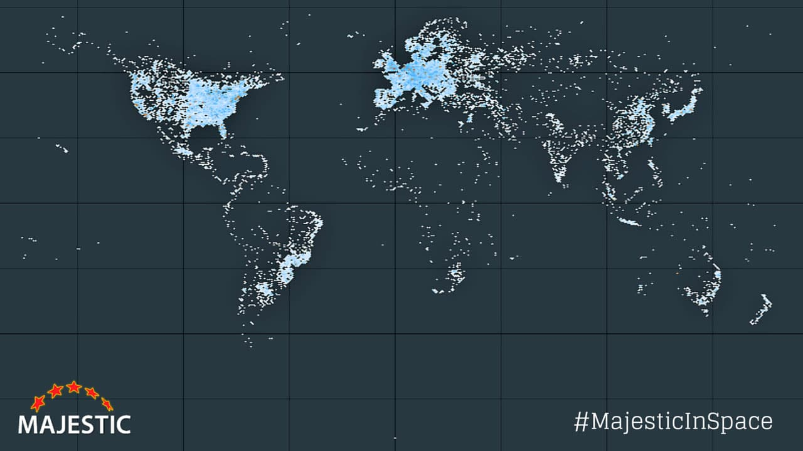

Heritage

L'invention du World Wide Web est considérée comme l'une des plus importantes de l'histoire humaine. En quelques décennies, elle a transformé presque tous les aspects de la société :
En 2024, le Web connecte plus de 5 milliards d'utilisateurs dans le monde.
Tim Berners-Lee a reçu de nombreuses récompenses internationales pour son travail :
| Année | Distinction | Organisme |
|---|---|---|
| 2004 | Chevalier de l'Empire britannique (KBE) | Couronne britannique |
| 2007 | Ordre du mérite du Royaume-Uni | Reine Elizabeth II |
| 2012 | Hommage lors des JO de Londres | Comité olympique |
| 2013 | Queen Elizabeth Prize for Engineering | Royaume-Uni |
| 2016 | Prix Turing — 1 million de dollars | ACM |
| 2017 | Prix du Millénaire pour la technologie | Technology Academy Finland |
Le prix Turing est souvent appelé le Nobel de l'informatique. Berners-Lee l'a reçu pour l'ensemble de son œuvre.
Malgré son statut d'inventeur du Web, Berners-Lee reste très engagé pour défendre un Web ouvert et équitable. Il s'oppose notamment à :
En 2019, il lance le Contract for the Web, un document signé par des gouvernements, des entreprises et des citoyens, définissant les principes d'un Web sain et éthique.
« Le Web que j'ai imaginé, ouvert et libre, n'est pas celui d'aujourd'hui. Nous devons le réparer avant qu'il ne soit trop tard. » — Tim Berners-Lee, 2018
Projet réalisé par :
L1 MIPSI : Parcours Informatique 2025/2026